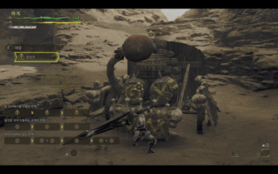

대검은 몬스터 헌터 시리즈를 대표하는 상징적인 무기로,
느리지만 강력한 한 방을 자랑합니다. 기본적인 공격 속도는 느리지만,
차지 공격을 통해 강력한 대미지를 가할 수 있어 숙련된 사냥꾼에게는 최고의 화력을 보장합니다.
특히 상쇄와 가드 기능을 병행하여 공격과 방어의 균형을 갖춘 공방일체의 전투 스타일을 구현할 수 있습니다.
자신의 플레이 스타일에 따라 저점 중심의 안정적인 운영과 인파이팅을 통한 공격적인 운영을 선택 할 수 있습니다.

대검
특성 요약
| 무기 | 상쇄 | 가드 | 전용자원 | 난이도 |
|---|---|---|---|---|
| 대검 | ✅ | ✅ | ❌ | 2 |
대검 기본 조작
| 동작 | PC | Xbox/콘솔 | 설명 |
|---|---|---|---|
| 세로베기 | Y | 모으기가 필요 없는 참격. 세로베기에서는 모으기로 파생된다. | |
| 모으기 | Y 길게 | ||
| (모으기 파생) 모아베기 | Y 놓기 | ||
| (모으기 파생) 태클 | 콤보 중 |
Y 길게 + B | 모으기시간과 위력이 비례하는 참격.
모아베기 Y 길게 누르기에서 강 모아베기로,
그 후 Y 길게 누르기로 참 모아베기로 파생된다. 참 모아베기 첫 공격이 부드러운 부위에 맞으면 참 모아베기(강격)로 파생된다. 모으기 중 MHWs 버튼 동그라미로 파생 가능한 태클은 몸이 움츠러들거나 날아가지 않는다. 저스트 태클에 성공하면 모으기 단계를 유지할 수 있다. |
| 베어넘기기 | B | 넓은 범위를 베는 참격. 태클에서는 뛰어들어 베어넘기기로, 강 모아베기에서는 강 베어넘기기로 파생된다. | |
| 상쇄 베어올리기 | 모으기 후 버튼 놓기 |
Y + B 모으기 후 버튼 놓기 |
상쇄 효과가 있는 베어올리기 공격. 몬스터 공격에 대검으로 공격해 상쇄 대성공 시 추격 십자베기로 파생된다. |
| 가드 | RT | ||
| 집중 관통 베기 | LT + RB | 집중 약점 공격 |
발납 대검
Y
+
A
+
RB
세로베기 구르기 납도 순서로 하는 기초적인 운용법
패턴 숙지에 유용하며 운용 난이도가 가장 쉬운 방법 중 하나입니다.
세로베기 후에 가드를 섞어 쓰기도합니다.

태클 & 참모아
Y
+
B
+
Y
몬스터의 공격을 태클의 슈퍼 아머로 넘기는 운용법
태클로 모아베기 캔슬시 다음 단계의 모아베기로 이어지기 때문에 빠르게 참모아베기로 넘어갈 수 있습니다.
태클이 기절 누적치까지 무시하지는 못하므로 기절 내성 스킬이 반필수적입니다.

저스트 타이밍
RT
+
A
상쇄와 힘겨루기를 사용한 인파이팅
이번작 대검의 가장 큰 특징은 상쇄와 힘겨루기를 모두 할 수 있는 유일한 근접무기라는 점입니다.
어느정도 숙련된 이후부터는 몬스터의 패턴에 카운터를 치는 운용이 가능해집니다.